快速入门
打开软件后，三步即可看到第一条数据：
- 选择串口 — 顶栏下拉菜单自动扫描可用串口
- 点击连接 — 波特率默认 115200，通常不需要改
- 切换到对应标签页 — 数据会自动路由到正确的面板
STM32 端发一行 [plot,ch1,25.3]，波形图面板即刻显示曲线。无需任何配置。
Serial.c + Serial.h），扔进 CubeMX 工程。配套演示工程在 example/ 目录，烧录到 STM32F407 即可看到所有面板的演示数据。
面板详情
协议格式统一：[type,参数...]，PC 端根据 type 字段自动路由到对应面板。
收发区
串口通信的主标签页，上半部分接收数据，下半部分发送数据。
📥 接收区
所有串口数据在此显示。AvalonEdit 虚拟化渲染，高频数据不掉帧。
工具栏：⏸ 暂停 / 导出日志 / 清空接收区 / 🔍 搜索（Ctrl+F，支持关键字/正则/大小写）/ 📡 筛选（按协议类型过滤显示内容）。
侧栏设置：时间戳格式（无/HH:mm:ss/HH:mm:ss.fff/yyyy-MM-dd HH:mm:ss）、消息回显、行号显示、系统消息独立显示（三色日志）。换行符可选（\r\n / \n / \r / 无）。定时发送可设间隔（ms），可选发送后自动清空发送区。接收/发送编码（UTF-8 / GBK）、HEX/文本双模式独立切换。
📤 发送区
快捷发送 chip 按钮 + 右键编辑删除、发送历史（最近 20 条去重，▾ 下拉）、HEX 实时格式化提醒。Enter = 发送 / Shift+Enter = 换行。
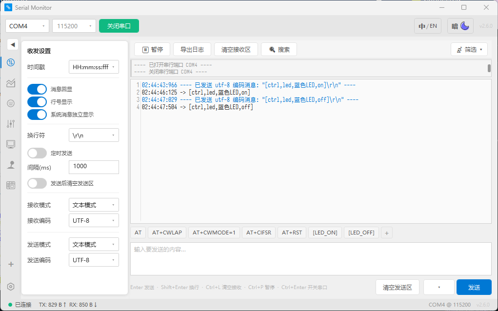
📈 波形图
同一标签页内切换三种视图：时域波形 → 调参工作台（底部抽屉）→ FFT 频谱（⏱/📶 按钮）。通道名自动成为图例，颜色自动分配。
时域波形
[plot,通道名,数值]// 单通道
Serial_Printf(&huart1, "[plot,ch1,%d]\r\n", adc_val);
// 多通道 — 一条消息发多条曲线
Serial_Printf(&huart1, "[plot,ax,%.2f][plot,ay,%.2f][plot,az,%.2f]\r\n", ax, ay, az);
// PID 调参 — 名字自动成为图例
Serial_Printf(&huart1, "[plot,P,%.3f][plot,I,%.3f][plot,D,%.3f]\r\n", kp, ki, kd);侧栏设置：显示模式（滚动/扫描）、数据点数、Y 轴自动/手动（含上下限）、标点 / 连线 / 数值 HUD 独立开关。🗑 清除全部曲线、📥 导出 CSV。滚轮缩放、右键拖拽平移、悬停查看数值。
暂停后 📊 详细：点击 📊 进入信号分析面板——Vpp / Vmax / Vmin / 平均值 / RMS、频率 / 周期 / 占空比 / 高电平时间 / 低电平时间 / 上升时间 / 下降时间、波形类型识别（正弦/方波/三角/锯齿/AM/混合/噪声/阻尼/脉冲）。📄 复制数据、📊 复制统计、📋 全部复制。

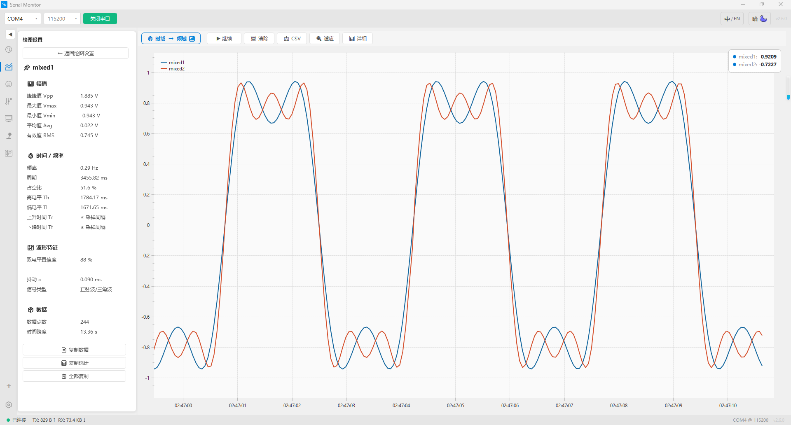
🎛️ 调参工作台
波形图底部可伸缩抽屉。拖动滑杆调整 PID 参数，同时实时观察波形变化。
[slider,参数名,数值] ← PC 端拖滑杆 → 回控 MCU滑杆与 Sliders 面板共享 VM，步长/颜色/范围双向即时生效。+/- 按钮精调 PID。
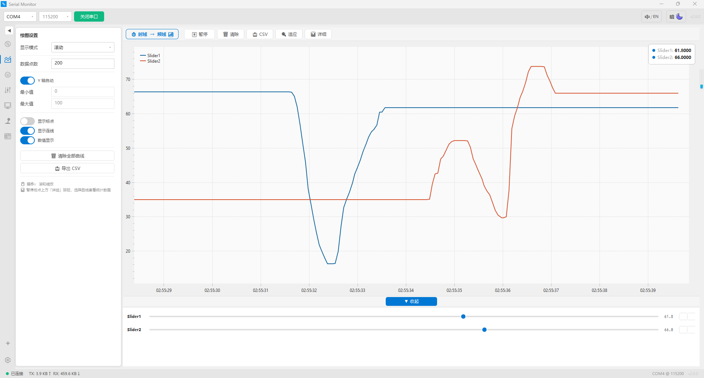
📶 FFT 频谱
点 ⏱/📶 按钮一键切换到频域。PC 端自动对 [plot,...] 数据滑窗 FFT，STM32 端零改动。也可由 STM32 端 CMSIS-DSP 计算后直发：
[fft,通道名,点数,bin0,bin1,...] ← STM32 端直发频谱窗函数：汉宁 / 矩形 / 汉明 / 布莱克曼。频域指标：基频 / 幅度 / THD / SNR / DC 偏置。采样率输入 → X 轴 Bin → Hz 显示。

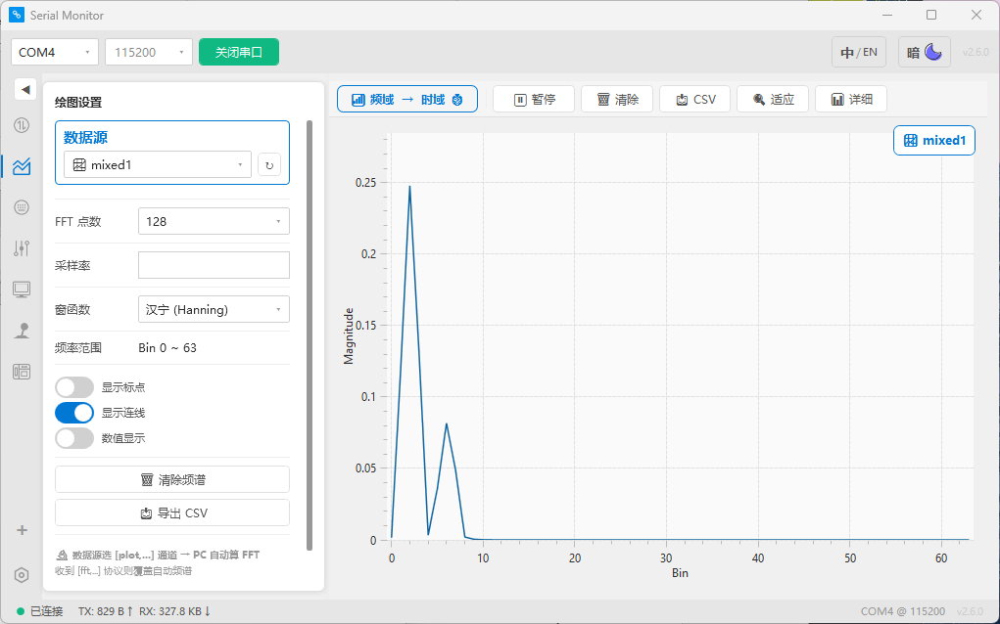
📡 传感面板
STM32 发一行 [sensor,temp,芯片温度,42.5]，PC 端自动建卡——零配置，即插即显。
协议格式
[sensor,类型,卡片名,值,辅助参数]8 类卡片
| 类型 | 格式 | 示例 |
|---|---|---|
| 温度 | [sensor,temp,名,°C] | [sensor,temp,芯片,42.5] |
| 湿度 | [sensor,humidity,名,%] | [sensor,humidity,环境,68.2] |
| 气压 | [sensor,pressure,名,hPa] | [sensor,pressure,气压,1013.2] |
| 状态 | [sensor,status,名,online] | [sensor,status,主板,online] |
| 电机 | [sensor,motor,名,RPM,PWM%] | [sensor,motor,电机1,2450,85] |
| 电池 | [sensor,battery,名,V] | [sensor,battery,电池,3.85] |
| 开关 | [ctrl,led,名,on/off] | [ctrl,led,蓝色LED,on] |
| 滑杆 | [sensor,slider,名,值] | [sensor,slider,亮度,75] |
普通模式：卡片概览。开关卡点一下 → [ctrl,led,名,on] 发回 MCU。滑杆卡拖拽实时回控。数值卡内嵌 30 点迷你面积图，鼠标悬停查看数据点。状态卡 2 秒心跳超时自动绿变红、online→offline。
编辑模式（卡片管理）：点"编辑"进入——拖拽排序卡片、增删改卡片、分组布局。侧栏切换分组，每组可独立管理。
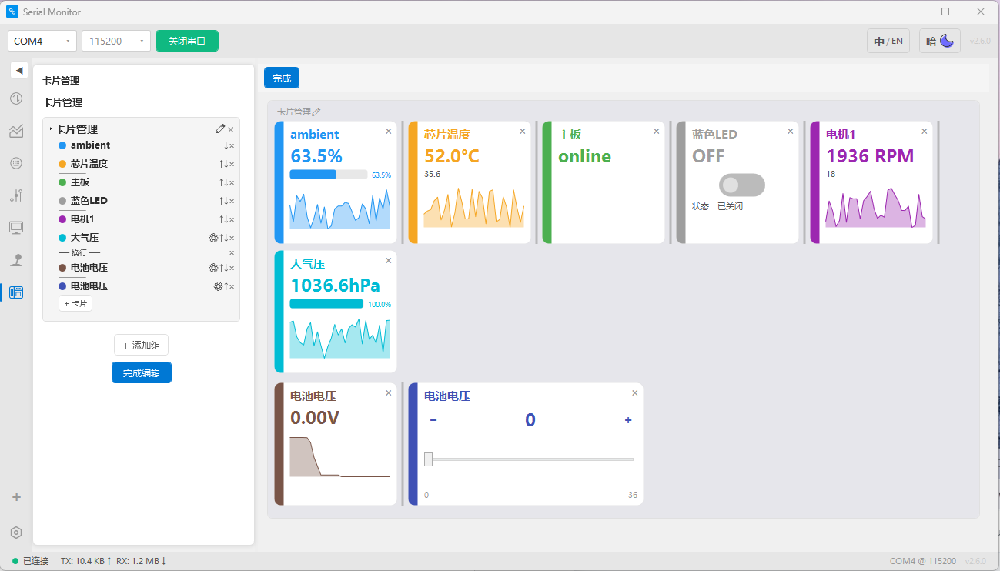
[sensor,status,名,online] 重置 2s 倒计时。超时自动绿变红、online→offline。固件挂了不需要发 offline——"死人不会打电话报丧"。
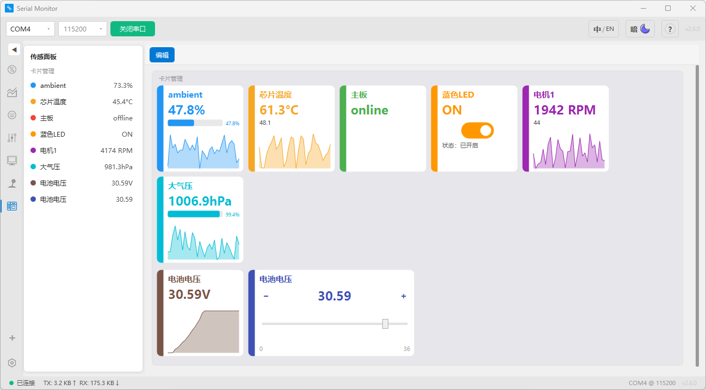
🔘 按键面板
虚拟按键面板，PC 端按下 → 发送 [key,name,state] → MCU 端响应。
协议格式
[key,按键名,状态] ← 状态 = "on" | "off"（字符串，非 0/1）MCU 端接收示例
char type[16], name[32], state[16];
GetField(raw, 0, type, sizeof(type));
GetField(raw, 1, name, sizeof(name));
GetField(raw, 2, state, sizeof(state));
if (strcmp(type, "key") == 0) {
if (strcmp(name, "KEY1") == 0 && strcmp(state, "on") == 0) {
HAL_GPIO_TogglePin(GPIOB, GPIO_PIN_0);
}
}普通模式：点按键 → 侧栏显示最后操作反馈（按下/松开协议预览，可复制）。
编辑模式：点"编辑"进入——+ 添加按键、⌨ 键盘布局（6 种预设）、🗑 清空全部。选中按键后侧栏编辑属性：按键名、自锁开关、按下/松开模式（null / 键名 / up / down / on / off）及对应发送值、宽度/高度、颜色（40 色 Material Design 色板 + hex 自定义）。支持批量选中编辑 + 🗑 删除。
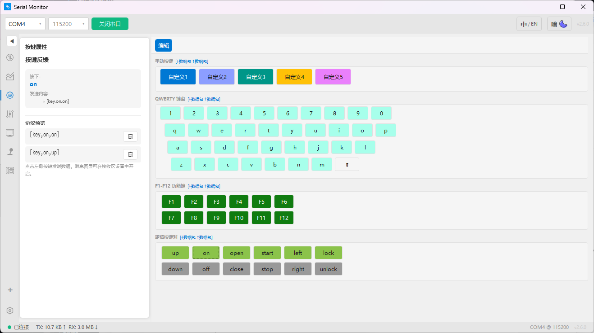
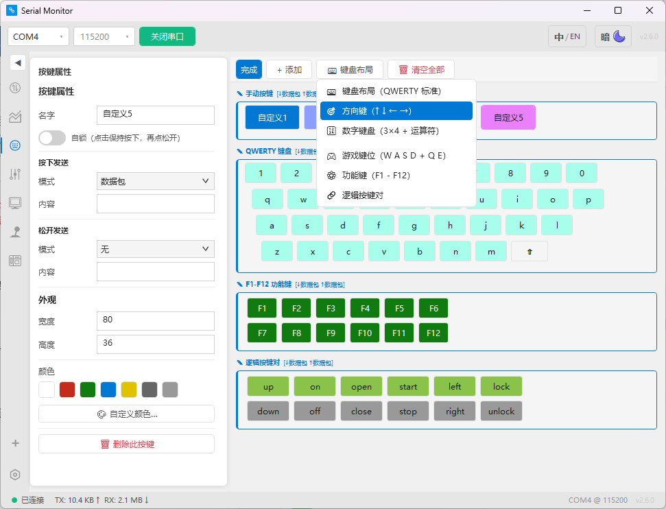
🎚️ 滑杆面板
拖拽滑杆 → 节流发送 [slider,name,val] → MCU 端实时接收数值。
协议格式
[slider,滑杆名,数值] ← 值范围取决于滑杆配置（默认 0~100）MCU 端接收示例（PWM 调光）
if (strcmp(type, "slider") == 0) {
char name[32], valStr[16];
GetField(raw, 1, name, sizeof(name));
GetField(raw, 2, valStr, sizeof(valStr));
if (strcmp(name, "Slider1") == 0) {
float duty = (float)atof(valStr); // "75.5" → 75.5f
TIM2->CCR1 = (uint32_t)(duty / 100.0f * 999);
}
}普通模式：侧栏快捷预设（全部归零/置中/全部最大）、当前值/范围/步长/发送值实时显示、协议预览可复制。
编辑模式：点"编辑"进入——+ 添加滑杆、🗑 清空全部。选中滑杆后侧栏编辑：名称、最小值/最大值、步长、发送间隔(ms)、颜色、轨道风格（默认/极简 + 自定义 PNG）、拇指风格（默认/极简 + 自定义 PNG）。🗑 删除此滑杆。
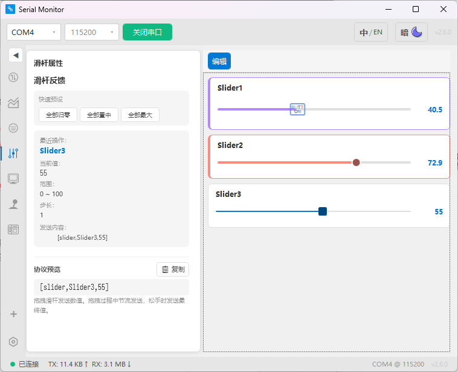
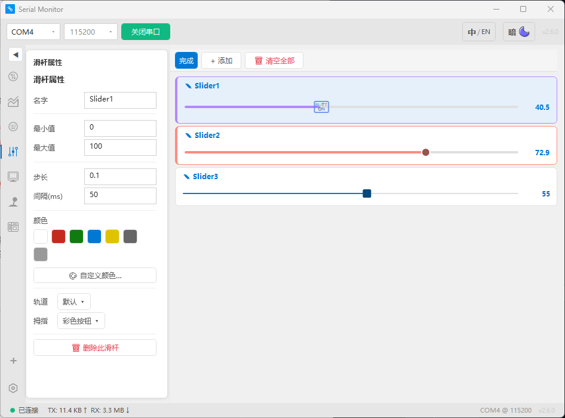
🕹️ 摇杆面板
双轴摇杆控件 → [joystick,id,x1,y1,x2,y2] → MCU 端控制（如小车/云台）。
协议格式
[joystick,id,x1,y1,x2,y2] ← (x1,y1)=摇杆1, (x2,y2)=摇杆2
坐标 -100~100，中心=0侧栏设置：发送间隔(ms)。⟲ 全部回中。摇杆反馈——实时显示当前坐标值 + 协议预览 [joystick,id,x1,y1,x2,y2]。
风格：3 种内置风格（手柄/极简/经典）+ 自定义图片素材。顶栏「底板 ▾」「拇指 ▾」分别切换。自定义 PNG 放入素材文件夹即可自动识别。
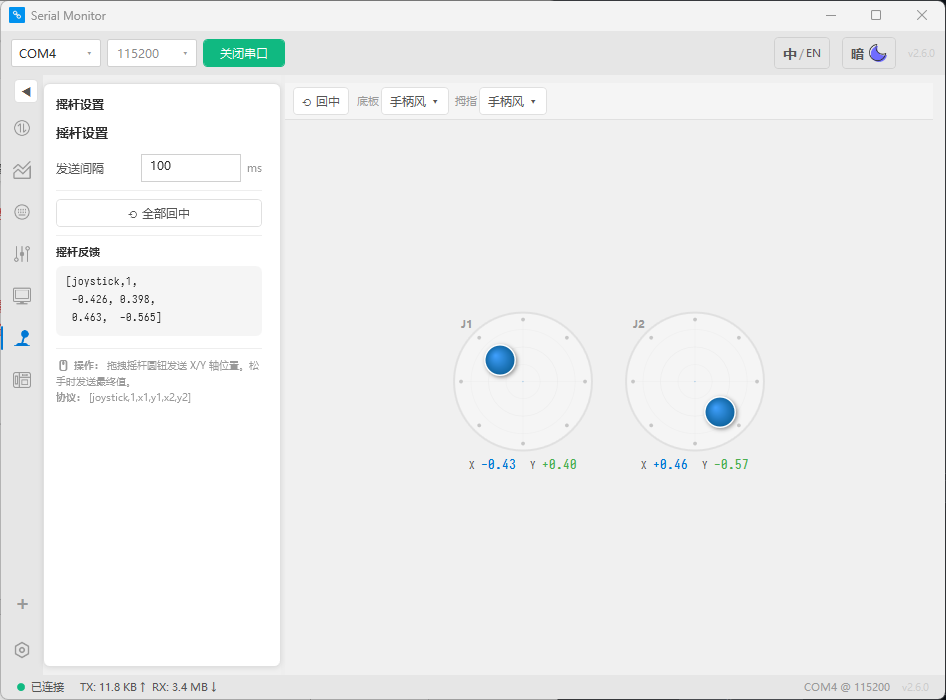
🎨 OLED 绘图 & PC 画板
PC 端鼠标绘制图形 → 实时转换为 [draw,...] 协议 → STM32 接收后渲染到物理 OLED/LCD 屏幕。
11 种绘图指令
| 指令 | 格式 |
|---|---|
| 点 | [draw,point,x,y,#color] |
| 线 | [draw,line,x1,y1,x2,y2,#color] |
| 矩形 | [draw,rect,x,y,w,h,#color] |
| 圆角矩形 | [draw,rrect,x,y,w,h,r,#color] |
| 圆 | [draw,circle,cx,cy,r,#color] |
| 椭圆 | [draw,ellipse,cx,cy,rx,ry,#color] |
| 三角形 | [draw,triangle,x1,y1,x2,y2,x3,y3,#color] |
| 弧线 | [draw,arc,cx,cy,r,start,end,#color] |
| 文字 | [draw,text,x,y,content,size,#color] |
| 清屏 | [draw,clear] |
| F5 增量同步 | [draw,set,id,指令,参数...] / [draw,del,id] |
旋转支持：矩形/椭圆支持旋转，a<angle> 协议后缀。F5 增量同步：拖动图形时每次只发 1 帧，MCU 本地维护图形数组。双屏支持：OLED 128×64 + LCD 240×280，注释一行代码即可切换。PC 画板：类似画图软件，鼠标拖拽绘制 → 实时同步到 STM32 物理屏幕。
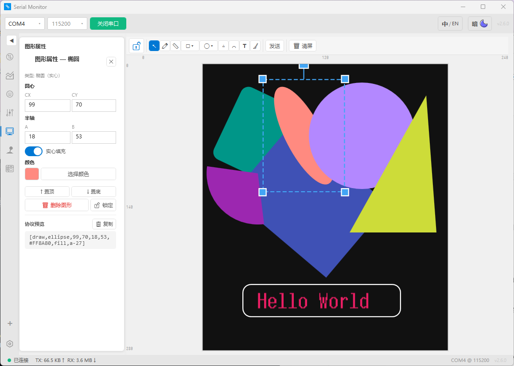
协议速查
全部协议格式、参数、方向、示例。📤 = MCU→PC 📥 = PC→MCU 🔄 = 双向。
| Type | 格式 | 方向 | 示例 | 说明 |
|---|---|---|---|---|
plot | [plot,通道名,数值] | 📤 | [plot,ch1,25.3] | 通道名自动成为图例，多通道一条消息 |
fft | [fft,通道名,点数,bin0,...] | 📤 | [fft,ch1,256,0,12,45,...] | STM32 端 CMSIS-DSP FFT 后发送 |
sensor | [sensor,类型,卡片名,值,辅助] | 📤 | [sensor,temp,芯片,42.5] | 8 种卡片类型，零配置自动建卡 |
ctrl | [ctrl,子类型,名,动作] | 🔄 | [ctrl,led,LED1,on] | 开关卡/滑杆卡双向控制 |
key | [key,按键名,状态] | 📥 | [key,KEY1,on] | 状态="on"/"off"（字符串） |
slider | [slider,滑杆名,数值] | 📥 | [slider,kp,0.85] | 拖动节流发送，松手发最终值 |
joystick | [joystick,id,x1,y1,x2,y2] | 📥 | [joystick,1,50,-30,0,0] | 坐标 -100~100，中心=0 |
draw | [draw,指令,参数...] | 📥 | [draw,circle,64,32,20,#FFF] | 11 种绘图指令 + F5 增量同步 |
draw,set | [draw,set,id,指令,参数...] | 📥 | [draw,set,a1,circle,64,32,20,#0F0] | F5 增量同步——只发变化的图形 |
draw,del | [draw,del,id] | 📥 | [draw,del,a1] | F5 删除图形 |
display | [display,x,y,text,size,#color] | 📥 | [display,0,0,Hello,24,#FFF] | 旧协议，建议用 [draw,text,...] |
- 方括号
[]包裹每条消息，逗号分隔字段 - 一条消息可含多组方括号：
[plot,a,1][plot,b,2]\r\n - 消息以
\r\n结尾（Serial_Printf自动追加） - 小数点
.不是分隔符——42.5不会被拆断 - 字段留空用双逗号：
[sensor,temp,温度,,85]→ 值显示--
设置页
点击标签栏最右侧的 ⚙ 进入设置页。左侧为导航，右侧为子页面。所有设置实时生效，无需重启。
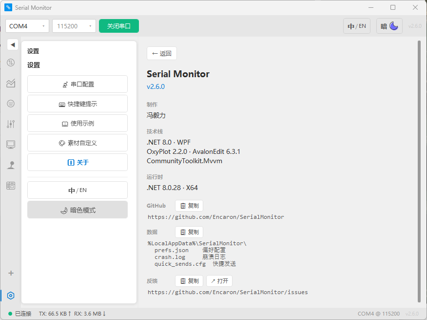
📡 串口配置
数据位（5~8）、停止位（1/1.5/2）、校验位（None/Odd/Even）、流控（None/RTS/XOnXOff）。DTR / RTS 控制信号可手动开关。自动重连——串口意外断开后自动尝试重新连接。流量计数保持——串口重开时不重置 TX/RX 字节计数。
⌨ 快捷键提示
| 分组 | 快捷键 | 功能 |
|---|---|---|
| 全局 | Ctrl + Enter | 打开 / 关闭串口 |
| 全局 | Ctrl + P | 暂停 / 继续显示 |
| 全局 | Ctrl + L | 清空接收区 |
| 全局 | Ctrl + Shift + L | 清空发送区 |
| 全局 | Ctrl + F | 呼出接收区搜索栏 |
| 发送区 | Enter | 发送 |
| 发送区 | Shift + Enter | 换行 |
📖 使用示例
各面板的协议格式示例，和 MCU 端 Serial_Printf 模板一致。新手可从这里复制粘贴到 STM32 工程验证。
🎨 素材自定义
滑杆轨道和拇指支持自定义颜色。摇杆底板和拇指支持自定义 PNG 图片素材——放入素材文件夹，软件下拉菜单自动识别。删除 PNG 后重启软件，菜单中自动消失。内置风格（默认/极简/经典）始终可用。页面显示当前素材文件夹路径，点一下即可复制。
ℹ 关于
版本号、作者（冯毅力）、技术栈（.NET 8 / WPF / OxyPlot / AvalonEdit / CommunityToolkit.Mvvm）、.NET 运行时版本。GitHub 仓库地址、用户数据路径、Issue 反馈链接均支持一键复制或浏览器打开。
🌐 中英双语 + 🌙 主题切换
设置页底部常驻 中/EN 和 ☀/🌙 按钮，和顶栏按钮等价。~550 条翻译全覆盖，21 色 DynamicResource 原地变色。
MCU 对接
MCU 端只需 Serial.c + Serial.h 两个文件，扔进 CubeMX 工程即可。零依赖、零 malloc。
① 导入文件
将 Serial.c 和 Serial.h 复制到 CubeMX 工程的 Core/Src/ 和 Core/Inc/。
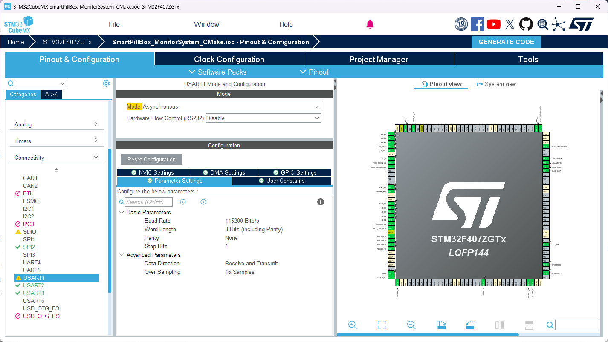
在 Serial.h 顶部选择启用哪些串口：
#define SERIAL_USE_USART1 1 // 启用
#define SERIAL_USE_USART2 0 // 禁用
#define SERIAL_USE_USART3 0 // 禁用② ⚠️ 开启串口中断（必须）
在 CubeMX 中，对每个要用的 USART：NVIC Settings → 勾选 USARTx global interrupt ✅。不勾中断 → 接收功能静默失效。
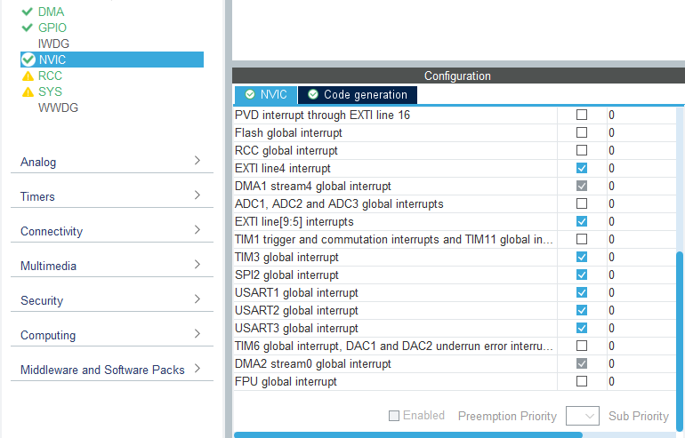
③ 三行初始化
#include "Serial.h"
int main(void) {
HAL_Init();
SystemClock_Config();
MX_GPIO_Init();
MX_USART1_UART_Init();
// ↓ 就这一行——启动方括号协议接收
UART_InitReceive(SERIAL_DEVICE_1, SERIAL_PROTOCOL, SERIAL_SQUARE_BRACKET);
while (1) {
if (UART_GetRxFlag(SERIAL_DEVICE_1)) {
char *msg = UART_GetRxData(SERIAL_DEVICE_1);
// msg = "ctrl,led,LED1,on"（方括号和 \r\n 已剥离）
}
}
}④ 发送数据到 PC（6 个函数）
| 函数 | 说明 | 示例 |
|---|---|---|
Serial_SendByte | 发一个字节 | Serial_SendByte(&huart1, 0x42) |
Serial_SendArray | 发字节数组 | Serial_SendArray(&huart1, data, 4) |
Serial_SendString | 发字符串 | Serial_SendString(&huart1, "OK\r\n") |
Serial_SendNumber | 发定长数字 | Serial_SendNumber(&huart1, 42, 2) |
Serial_Printf | 格式化发送 ⭐ | Serial_Printf(&huart1, "Val:%.1f\r\n", 3.14) |
Serial_SendPacket | 发数据包 | Serial_SendPacket(&huart1, data, len) |
⑤ 接收 PC 指令
主循环中轮询接收，用 GetField 拆字段，按 type 路由：
// GetField — 从逗号串提取第 index 个字段
void GetField(const char *str, int index, char *out, int outSize);
// 例：raw = "ctrl,led,LED1,on"
char type[16], name[32], action[8];
GetField(raw, 0, type, sizeof(type)); // type = "ctrl"
GetField(raw, 2, name, sizeof(name)); // name = "LED1"
GetField(raw, 3, action, sizeof(action)); // action = "on"
// 按 type 路由到对应 handler
if (strcmp(type, "ctrl") == 0) Ctrl_Handle(raw);
else if (strcmp(type, "slider") == 0) Slider_Handle(raw);
else if (strcmp(type, "key") == 0) Key_Handle(raw);
else if (strcmp(type, "draw") == 0) Draw_Handle(raw);⑥ 传感数据上报
定时发送传感器读数，PC 端自动建卡。心跳状态卡保持 500ms 间隔：
void Sensor_Report(void) {
static uint32_t last_ms = 0;
if (HAL_GetTick() - last_ms < 500) return;
last_ms = HAL_GetTick();
Serial_Printf(&huart1, "[sensor,temp,芯片温度,%.1f]\r\n", 42.5);
Serial_Printf(&huart1, "[sensor,humidity,环境湿度,%.1f]\r\n", 68.2);
Serial_Printf(&huart1, "[sensor,status,主板,online]\r\n"); // ← 心跳
}常见问题
Q: 接收不到数据，但发送正常？
99% 是没在 CubeMX 里开串口中断。NVIC 页签 → USARTx global interrupt → 勾上 ✅ → 重新编译。
Q: 串口列表为空？
确认设备已连接、驱动已安装。部分 USB 转串口芯片（CH340/CP2102）需手动安装驱动。
Q: 软件卡死/响应迟钝？
几乎都是 MCU 端发送太快。常规数据（传感/波形/滑杆/LED）请保持 50ms 以上间隔，PC 画板绘图 5ms 以上。8 张传感卡片 × 每 5ms 发一次 = 串口瞬间塞爆，PC 端渲染跟不上。宁可慢一点，求稳不求快。
Q: 波形图卡顿/数据丢失？
波特率太低——115200 是推荐起点。不要在 while(1) 里放 HAL_Delay(500) 然后发大量数据。
Q: 传感面板卡片不更新？
检查协议格式——必须是 [sensor,类型,卡片名,值]。值不能为空（除非主动留空用双逗号 ,,）。状态卡 2 秒无心跳自动标红。
Q: 支持哪些 STM32 系列？
只要用 HAL 库就支持。已在 STM32F407 和 STM32H743 上验证，F1/G0/L4 理论兼容。
Q: 如何反馈问题？
请在 GitHub Issues 提交，附上串口参数、操作步骤和截图。